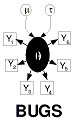
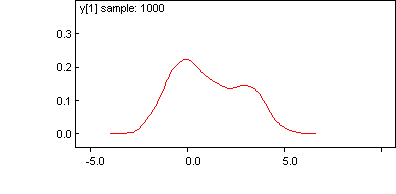

 Mixtures: each observation is from a mixture of
distributions of different complexity
Note that we do not require reversible jump techniques as this is really only a single model.
Suppose that for each i: x[i] ~ N(mu, 1) with probability p; and x[i] ~ N(0, 1) otherwise (i.e. with probability 1 - p). We generate 100 observations with p = 0.4 and mu = 3 as follows. We forward sample
once
from the model below by compiling the code and then using the 'gen inits' facility. The simulated data can then be obtained by selecting
Save State
from the
Model
menu.
model {
mu <- 3
p <- 0.4
m[1] <- 0
m[2] <- mu
for (i in 1 : 100) {
group[i] ~ dbern(p)
index[i] <- group[i] + 1
y[i] ~ dnorm(m[index[i]], 1)
}
}
We may observe the underlying mixture distribution by monitoring any one of the y[i]'s over a number of additional sampling cycles. For example, the following kernel density plot was obtained after monitoring y[1] for 1000 iterations:

T
o analyse the simulated data we use the following code:
model {
mu ~ dunif(-5, 5)
p ~ dunif(0, 1)
m[1] <- 0
m[2] <- mu
for (i in 1:100) {
group[i] ~ dbern(p)
index[i] <- group[i] + 1
y[i] ~ dnorm(m[index[i]], 1)
}
}
After 6000 iterations (with a burn-in of 1000) we have good agreement with the 'true' values:
node mean sd MC error 2.5% median 97.5% start sample
mu 3.049 0.2088 0.004593 2.656 3.046 3.474 1001 5000
p 0.4257 0.06002 0.001317 0.3111 0.424 0.5457 1001 5000
Initial values
:
list(mu = 0, p = 0.5)
Simulated data:
list(
y = c(
2.401893189187883,0.2400077667887621,-0.1556589480882761,-0.8457182007723154,0.37008097263224,
3.586009960655263,1.598955590680827,3.826518138558907,-0.9630895329522409,0.6951468806412424,
3.129328672725175,0.01025316168135796,0.4887298480200992,0.3865632519840305,-0.2697534502300845,
-1.18891944058751,4.654771935717583,0.8063807170988319,-0.9867060769784521,0.9154433557950319,
-0.5419217214549653,3.358942981432516,3.33734145389337,3.3960739633218,2.038185222382867,
5.241414085016386,3.362823353717864,-0.6013483154102028,0.441480491316843,2.96228336554288,
-2.278054802181326,1.446861613005477,1.49864667127073,2.819410923921955,3.668112206659865,
0.8253991892717565,1.117718710956935,3.976040128045549,1.261678474198661,-0.03343173803015926,
-0.4908566523519207,0.3532664087054739,-1.679362022373703,-1.555760053262808,1.213022071911081,
3.421072023150202,2.523431239569371,-1.218844344999495,-0.270208787763775,-0.1217560919494103,
2.033835091596821,0.4654798734609423,-0.7231540561359688,2.146640407714382,4.286633169106659,
1.445348149793759,0.180718235361594,1.527791426438174,-1.010060680847808,1.969758236040937,
-0.3553936244225268,1.465488166547136,3.32669874753109,1.061348836020805,2.31746192198435,
0.9564080472865206,1.877477903911581,-0.6964242592539615,5.695159167887606,2.807268123194206,
-1.69815612298043,0.1881330355284009,0.04018232765300667,2.272096174325846,0.9694913345710192,
3.979152197443702,-0.7028546956095989,1.371423010966528,1.646618045628321,0.1919331499516834,
3.587928853903195,0.1219688057614579,2.570950727333546,1.888563572434331,1.10249950266553,
4.119103539377994,3.824513529111282,1.509248826260637,1.156700011660602,-0.0343697724869282,
3.816521442901518,0.0675520018218364,-0.002197033376085265,2.994147650487649,1.856351699226103,
3.539838516568062,0.5861211569557628,4.343058450523658,0.1760647082096519,3.678908111531086))